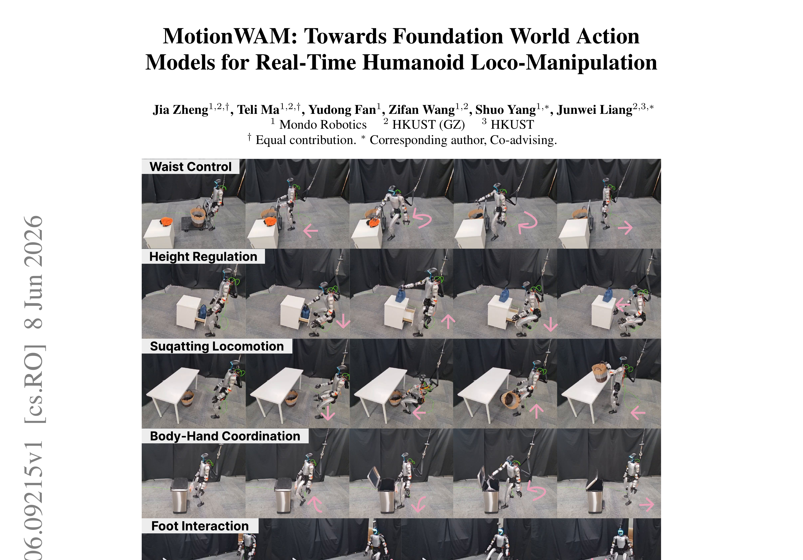
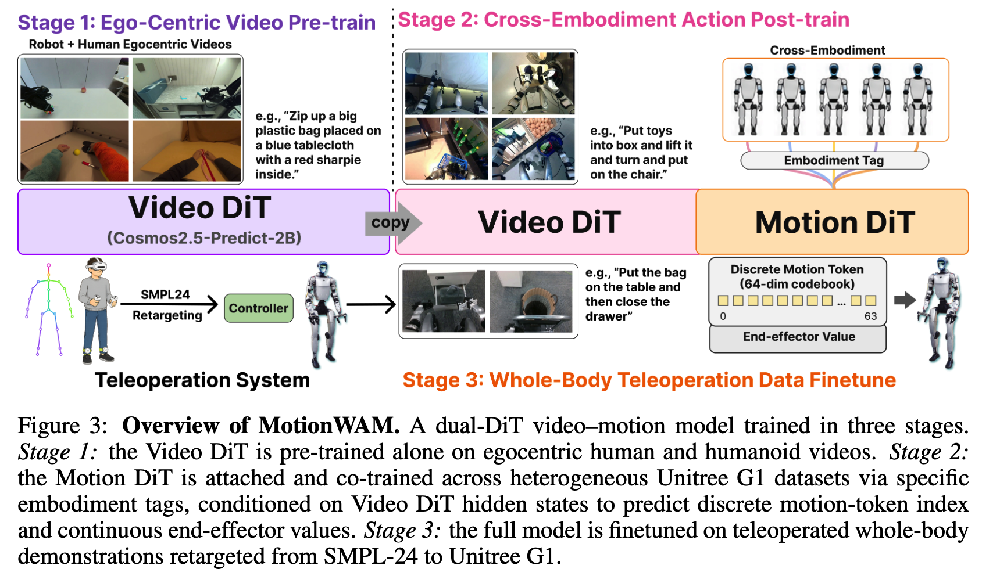
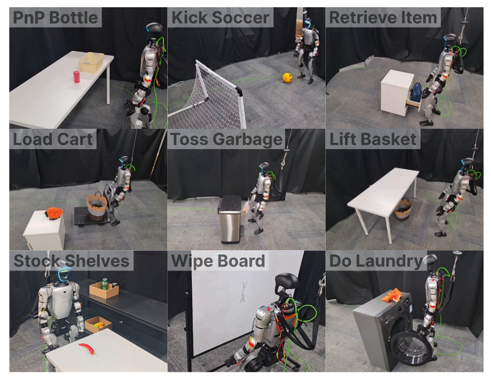
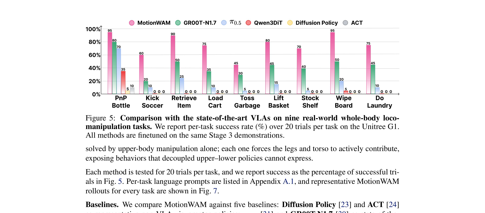

MotionWAM: Towards Foundation World Action Models for Real-Time Humanoid Loco-Manipulation
引言：人形机器人的 Loco-Manipulation 挑战
人形机器人 Loco-Manipulation（移动操作）需要同时协调平衡、 locomotion（移动）、reach（伸展）和物体交互。
传统方法采用分层架构：高层策略控制上半身进行精细操作，低层控制器仅跟踪粗略的基座命令来维持平衡。
这种"上下分离"的设计导致两个问题：(1) 上下半身动作空间不一致；(2) 腿部只能被动维持平衡，无法参与任务驱动的足部交互（如踩踏板、踢球）。
MotionWAM 的解决思路是：用统一的运动 latent取代分离的策略，让 Video World Model 的 intermediate denoising features 直接驱动全身动作 token。

主流人形控制采用 upper-lower split：高层策略输出上半身关节目标（fine-grained joint targets）， 低层控制器只接收基座速度/高度/朝向等 coarse 命令。这带来两个限制：
- 上下半身动作空间不一致（inconsistent action spaces）
- 腿部只能做 balance-preserving locomotion，无法做任务驱动的足部交互
"We present MotionWAM, a real-time WAM that drives autonomous humanoid loco-manipulation from a single egocentric camera by conditioning the policy on the intermediate denoising features of a video world model."
方法：双 DiT 架构与统一运动 Latent
上一节我们了解了现有工作的缺陷：VLA 缺乏物理先验，WAM 太慢，分层架构上下分离。 这一节作者提出 MotionWAM —— 一个实时 WAM，通过耦合 Video DiT 和 Motion DiT， 用 intermediate denoising features 驱动全身动作。
3.1 问题建模：predict-video-dynamics-then-invert
与 VLA 直接学习 $\pi_\theta(a_t \mid o_t, l)$ 不同，MotionWAM 采用 predict-video-dynamics-then-invert 范式：
- $\mathbf{o}_t$
- 第一人称视觉观察（egocentric observation）
- $l$
- 语言目标（language goal）
- $p_t$
- 本体感受状态（proprioceptive state）
- $\mathbf{o}_{t+1}^{\tau_v}$
- flow step $\tau_v$ 处的中间未来帧状态
- $\mathcal{H}(\cdot)$
- 从生成过程中提取隐藏状态的函数
- $\mathbf{m}_t$
- 统一运动 latent，编码全身运动：locomotion + torso + 高度 + 足部交互 + 手部操作
公式 (1) 里出现了两个概率分布，下标 $v$ = video，$a$ = action，对应"先预测视觉动态，再反推动作"的两步范式：
- $p_v(\cdot \mid o_t, l)$ — 视频动态分布
- 由 Video DiT 定义。给定当前第一人称观察 $o_t$ 和语言目标 $l$， 它描述"下一帧 $o_{t+1}$ 会是什么样"的概率。直观上是世界模型对 场景接下来怎么演变的想象——"如果我要完成这个任务，世界会变成什么样？"
- $p_a(\cdot \mid o_t, p_t, \mathcal{H}(o_{t+1}^{\tau_v}))$ — 动作分布
- 由 Motion DiT 定义。给定当前观察 $o_t$、本体感受 $p_t$， 以及从视频生成过程中截取的中间特征 $\mathcal{H}(o_{t+1}^{\tau_v})$， 它描述"该输出什么全身运动 latent $m_t$"——以"想象出来的视觉动态"为条件反推动作。
- $p_{va}$ — 联合分布（训练时使用）
- 训练时两个分布不是分开学的，而是在统一的 flow-matching 目标下联合建模： $p_{va}(o_{t+1}, m_t \mid o_t, p_t, l)$。双 DiT 共享激活，让视频分支和动作分支互相感知。
$\tau_v \in [0, 1]$ 是视频分支 flow matching 过程中的流时间（flow time）， 标记去噪走到了哪一步。加噪定义为（公式 2）：
代两个端点就能看清楚 $\tau_v$ 的含义：
| $\tau_v = 1$（起点） | $\mathbf{z}^{\tau_v} = \boldsymbol{\epsilon}_v$，纯高斯噪声，什么都没生成 |
| $\tau_v = 0$（终点） | $\mathbf{z}^{\tau_v} = \mathbf{z}^0$，完全干净的真实未来帧，完全生成好 |
| 中间值 | 噪声和真实帧的线性混合，越接近 0 越清晰 |
所以那个极限箭头 $\mathbf{o}_{t+1}^{\tau_v} \xrightarrow{\tau_v \to 0} \mathbf{o}_{t+1}$ 的意思就是：当进度条拉满（$\tau_v \to 0$），中间状态就收敛到真正的未来帧。 这只是在说明 $\mathbf{o}_{t+1}^{\tau_v}$ 这个记号的含义，不是一个额外操作。
关键：$\tau_v$ vs $\tau_f$ 的区别。这两个 $\tau$ 含义完全不同： $\tau_v$ 是"生成进度条的当前位置"（训练时随机采样）， $\tau_f$ 是 MotionWAM 固定去 hook 激活的那个时间步（$\tau_f \approx 1$，接近纯噪声端）。 Cosmos Policy 需要把 $\tau_v$ 一路迭代到 $\to 0$（真正画出未来帧）才能输出动作，所以慢（0.7 Hz）； MotionWAM 把读取点固定在 $\tau_f \approx 1$，single forward pass 截取特征、从不真正画帧，所以快 7× (4.9 Hz)。
3.2 全身运动 Latent 设计：$\mathbf{m}_t$ 的构成
$\mathbf{m}_t$ 不是一坨同质的向量，而是两种表示方式拼合的混合体，各自负责不同的身体区域：
先说 SONIC：$\mathbf{m}_t$ 的底座
整个 $\mathbf{m}_t$ 建立在 SONIC（Supersizing mOtion tracking for Natural humanoid Control，NVIDIA 2026）之上。 SONIC 是一个通用全身控制器——它的核心本事是把移动、躯干旋转、蹲立高度、脚部交互等各种粗粒度全身意图， 全部融入一个共享量化隐变量里统一表达，然后用一个单一物理仿真策略把这个隐变量解码成实际关节命令。 MotionWAM 不重新发明底层控制，而是直接复用 SONIC，让 Motion DiT 只需预测"喂给 SONIC 的那个隐变量"。 → 查看 SONIC 精读笔记
$k_t$ —— 离散的那一半（身体大动作）
$k_t$ 就是 SONIC 的 universal token，负责移动、躯干、身高、脚部交互这些粗粒度全身意图。 它的特别之处在于被 有限标量量化（FSQ, Finite Scalar Quantization） 压缩成离散形式：
| 结构 | 2 个 token，每个 token 32 个离散档位（32 levels） |
| 展开维度 | $2 \times 32 = 64$ 维离散向量（上标 64） |
| 取值集合 | $\{-1, -\frac{15}{16}, \ldots, \frac{15}{16}, 1\}$：$[-1, 1]$ 均匀分 32 档 |
| 负责区域 | locomotion（步态）、torso（躯干旋转）、height（骨盆高度）、foot interaction（足部踩踏） |
SONIC 论文明确选择 FSQ 而非 VQ-VAE，原因是：VQ-VAE 有codebook collapse的风险（大量 codebook 槽位空置不用）， 还需要额外的 commitment loss 和 EMA 更新来稳定训练。FSQ 没有独立的 codebook， 用 straight-through 梯度估计直接和 PPO 联合优化，训练更简单稳定。 瓶颈化（只准 32 档）是有意为之——逼模型把全身运动意图压成紧凑、可复用的表示。
$\mathbf{m}_t^{\text{cont}}$ —— 连续的那一半（灵巧手）
SONIC 的 universal token（$k_t$）管不到手指级别的精细操作。MotionWAM 因此额外附加一个连续向量 $\mathbf{m}_t^{\text{cont}}$，专门装 SONIC 覆盖不了的灵巧通道：左右夹爪命令、或灵巧手命令，直接驱动手部。 这部分保持连续而不量化，是因为抓取、捏取类动作需要平滑精细控制——卡成 32 档太粗糙了。 整个向量维度加起来是 66（含 SONIC token 展开 + 灵巧通道）。
$k_t$ 是左手（移动/躯干/脚步）——方向感强，可以用"向前走/蹲下/抬腿"这些离散意图描述； $\mathbf{m}_t^{\text{cont}}$ 是右手（手指精细操控）——需要连续精确的力度和位置， 不能离散化成"用力 1/用力 2"那种粗档位。这两部分合在一起，才是完整的全身运动意图。
Stage 3 微调的一个技巧：$\tilde{k}_t$
Stage 3 微调时，$m_t$ 的写法微调为 $(\mathbf{m}_t^{\text{cont}}, \tilde{k}_t)$—— 把原本离散的 token 索引塞进一个连续标量槽 $\tilde{k}_t$ 里。 这样整个 $m_t$ 都能用同一个 flow-matching 回归目标训练，不需要单独的分类头：
推理时用 最近邻取整（round） 把连续预测还原成离散索引，再交给 SONIC 解码成关节命令。 这正是论文公式 (6) 那条链的由来——整套东西统一在一个回归目标下训练，无需为离散部分设计额外的 loss。
3.3 双 DiT 架构
MotionWAM 的双 DiT 耦合框架直接继承自同组工作 DiT4DiT（arXiv 2603.10448，同为 Mondo Robotics + HKUST 团队）。 DiT4DiT 首先证明了视频生成 proxy 是训练 robot policy 最有效的 scaling 信号（比语义对齐快 7×、样本效率高 10×）， 并提出了 Video DiT + Action DiT 双模块、fixed-τ_f hook 提取 hidden state 的核心设计。 MotionWAM 在此基础上将动作空间从桌面臂控扩展到 29-DoF 全身 Loco-Manipulation， 并增加三阶段 egocentric 数据课程来解决实时人形控制的新挑战。 → 查看 DiT4DiT 精读笔记
MotionWAM 采用 双 DiT 架构：

第 1 步：Egocentric Video Pre-training
在 2,136 小时廉价视频上预训练 Video DiT。关键是只学视觉动力学，不接触动作标签。这让模型学会"从第一人称视角看世界如何变化"。
第 2 步：Cross-Embodiment Action Post-training
接入 Motion DiT，在异构 G1 数据上训练。通过 embodiment tag 区分不同机器人，共享 trunk 学习跨本体的通用运动表示。
第 3 步：Whole-Body Teleoperation Finetuning
在真实任务数据上端到端微调（9 个任务 × 200 episodes）。输出统一为 whole-body motion tokens，解锁任务驱动的足部交互。
视频分支和运动分支应该轮流专精，而不是从零一起联合训。如果一上来就两者同时学，海量视频数据和稀缺动作数据会互相拖累。三阶段的核心逻辑是： 每步专注一件事，逐步放开更新范围——先让模型学会"看世界"，再学会"动起来"，最后学会"做具体任务"。
▸ Stage 1 — Egocentric Video Pretraining
只训 Video DiT（Motion DiT 还没挂上），用约 2,136 小时第一人称人类视频 + 人形机器人视频，损失只用 $\mathcal{L}_{\text{video}}$（公式 3）。
要让模型学会"想象世界怎么动"，真正缺的不是动作标签，而是大量第一人称视频。 第一人称视频便宜（无需标注动作），有动作标注的机器人演示则少得多、贵得多。
所以只用便宜的无标注视频单独训 Video DiT，让主干能"吸收数据规模（absorb scale）"， 不被"那一小撮有动作标注的演示数据"卡住脖子（throttled）。 产出是一个以机器人视角为中心的动态先验——正是 $\mathbf{h}_t^{\tau_f}$ 特征能力的来源。
▸ Stage 2 — Cross-Embodiment Action Post-training
挂上 Motion DiT，同时更新 Video DiT 和 Motion DiT。数据是异构 Unitree G1 数据（不同末端执行器、不同动作格式），经各自 projector 路由进共享主干。联合损失：
防止动作信号一进来，就把 Stage 1 辛苦学到的动态先验冲掉（overwritten）。 如果只用 $\mathcal{L}_{\text{motion}}$ 训，模型可能为了拟合动作而丢掉视觉动态能力。 保留视频损失当作一个"表征正则项（representation regulariser）"——像个锚，逼模型在学动作的同时别忘了怎么想象。
▸ Stage 3 — Whole-Body Teleop Finetuning
端到端微调整个网络。数据是目标 G1 上采的遥操作全身演示——9 个任务 × 200 episodes，量极小。沿用公式 (5) 联合损失，结构不变（共享主干 + G1 projector）。
因为前两步已经打好底：Stage 1 给了动态先验，Stage 2 把先验锚定到动作空间。 Stage 3 只需少量演示就能快速适配（rapidly adapts）目标任务。 同一个网络同时继承了"视频动态 + 多形态锚定 + 任务行为"，无需改架构。
三阶段对照表
| Stage 1 | Stage 2 | Stage 3 | |
|---|---|---|---|
| 训什么 | 只 Video DiT | Video + Motion DiT | 整个网络端到端 |
| 数据 | 海量第一人称视频（无动作标注） | 异构 G1 数据（有动作） | 少量 G1 遥操作演示 |
| 损失 | $\mathcal{L}_{\text{video}}$ | $\mathcal{L}_{\text{motion}} + \mathcal{L}_{\text{video}}$ | $\mathcal{L}_{\text{motion}} + \mathcal{L}_{\text{video}}$ |
| 学到什么 | 第一人称视觉动态先验 | 把想象锚定到跨形态动作 | 具体任务行为 |
去掉 Stage 1 → 成功率下降 11%（失去视觉动态先验）； 去掉 Stage 2 → 成功率下降 28%（失去动作锚定，直接崩）。 两步互补——Stage 1 供先验，Stage 2 锚进动作空间，Stage 3 落到具体任务。
3.4 公式 (2) 拆解：Video DiT 如何把"想象"交给 Motion DiT
MotionWAM 最关键的设计是：不让 Video DiT 生成完整未来帧，而是只拦截一次前向传播的中间激活，把它当作视觉条件喂给 Motion DiT。这就是论文公式 (2)：
- $v_\theta^{\text{video}}(\cdots)$
- Video DiT 速度网络：$\theta$ 是训练好的固定参数（机器本身），括号里是每步喂入的条件：当前干净帧 $z_t^0$、语言指令 $l$、纯噪声未来帧 $z_{t+1}^{\tau_f}$、固定 flow timestep $\tau_f \approx 1$。
- $z_{t+1}^{\tau_f}$（输入）
- $\tau_f \approx 1$ 时 $z_{t+1}^{\tau_f} \approx \mathcal{N}(0, I)$——纯高斯噪声，没有任何真实未来信息。Video DiT 接收到它，只需结合当前帧 $z_t^0$ 做单次前向（不迭代 denoise）。
- $\mathcal{H}[\cdots]$
- Forward Hook：在 Video DiT 指定中间层"挂钩子"，拦截该层的激活向量。输出的不是最终 denoised 帧，而是中间的隐藏状态。
- $\mathbf{h}_t^{\tau_f}$（输出）
- 2048-dim 视觉特征向量——编码了"给定当前帧，场景趋向于怎么变化"的动力学语义，而不是未来帧的像素值。
$\theta$ = 训练好的 Video DiT 参数（不变）。括号里的 $(z_{t+1}^{\tau_f}, \tau_f \mid z_t^0, l)$ = 每个时间步实时喂进去的数据。 就像一台收音机（$\theta$ = 机器本身），调频信号（括号）每帧不同——机器不变，信号变。
为什么不让 Video DiT 生成完整未来帧？
若要生成清晰未来帧，Video DiT 需从 $\tau_v = 1$ 迭代 denoise 到 $\tau_v = 0$，每次迭代都是一次完整前向。 MotionWAM 固定 $\tau_f \approx 1$，只做一次前向，直接读中间层激活——即"one-shot imagination"模式：
| Cosmos Policy（生成完整帧，迭代 denoise） | ≈ 0.7 Hz |
| MotionWAM（拦截中间激活，单次前向） | ≈ 4.9 Hz |
类比：你看到对方抬起脚，就知道他要迈步——不需要等他真的走完一步。 中间激活已经编码了"场景动力学趋势"，完全够 Motion DiT 用。
Forward Hook 是什么？
Hook 是 PyTorch 的机制：在某个 Module 的前向传播结束后自动调用一个回调函数，把该层的输出传给你，无需修改模型源码。
captured = []
hook = block.register_forward_hook(lambda m, inp, out: captured.append(out))
_ = video_dit(z_noisy, tau_f, cond_frame, lang) # 单次前向
h_t = captured[0] # 拿到中间激活MotionWAM 在 Cosmos-Predict2.5 的某个 Transformer block 挂钩子，捕获该 block 的输出激活作为 $\mathbf{h}_t^{\tau_f}$。 就像在流水线某个工位旁放了抄录员——不打断流水线，但能拿到那个工位的产出。
Motion DiT 如何使用 $\mathbf{h}_t^{\tau_f}$
Motion DiT 接收三路输入，通过 interleaved self / cross-attention 消化它们：
Motion DiT 每个 Transformer block 先做 self-attention（motion token 之间内部协调）， 再做 cross-attention（从 $\mathbf{h}_t^{\tau_f}$ 吸收视觉信息），交替重复 $N$ 层。 这和 VLM 用 cross-attention 注入文本 token 的模式完全一致——只是把文本换成了视频动力学特征。
[noisy m_t tokens]
→ self-attn （motion token 内部协调）
→ cross-attn （从 h_t^τ_f 吸收视觉条件）
→ FFN
→ … × N 层
→ 速度场 v_φ
→ ODE 积分 → 干净 m_tStage 2 中，不同机体（G1、H1、GR1…）的动作空间各不相同。解决方案： Motion DiT 主干（trunk）参数共享，但每个机体拥有独立轻量 MLP—— 输入 projector（将本体状态映射到统一维度）和输出 projector（将速度场映射回各自动作空间）。 Stage 3 部署时只保留 G1 的 projector，主干权重不变。
3.5 Flow Matching 目标函数
Video DiT 和 Motion DiT 都用 flow matching 训练。定义 noise-perturbed 未来 latent：
Video DiT 学习速度场 $v_\theta^{\text{video}}$，Motion DiT 学习速度场 $v_\phi^{\text{motion}}$：
- $(\boldsymbol{\epsilon} - \mathbf{x}^0)$
- 从数据到噪声的"直线速度"（ground truth）。如果沿着直线从数据走向纯噪声，这就是速度。
- $v_\theta(\mathbf{x}^\tau, \tau)$
- 模型预测的速度场——告诉模型"你现在在这里，该往哪个方向走、走多快"
- MSE Loss
- 让预测速度尽量接近直线速度，这样模型就能学会从噪声"流"向数据
为了防止动作信号到来时"覆盖"掉学到的视觉动力学先验，Stage 2 使用 joint loss： $\mathcal{L}_{\text{Stage 2}} = \mathcal{L}_{\text{motion}} + \mathcal{L}_{\text{video}}$。 这就像是"边学开车边保持对道路的观察能力"——不能为了操控方向盘而忘记看路。
3.6 推理：从 Motion Token 到关节命令
推理时，Motion DiT 输出的 motion latent 解码为关节命令：
- Step 1
- Motion DiT 输出连续 latent $(\hat{\mathbf{m}}_t^{\text{cont}}, \hat{\tilde{k}}_t)$
- Step 2
- 对离散部分最近邻取整：$\hat{k}_t = \text{round}(\hat{\tilde{k}}_t)$
- Step 3
- 组装完整 motion latent 输入 SONIC
- Step 4
- SONIC 解码为 29-DoF 关节命令，驱动宇树 G1
数据集：三阶段渐进式数据混合
上一节我们了解了模型架构，但训练数据从哪里来？这是人形机器人领域的关键瓶颈。 MotionWAM 采用三阶段渐进式数据策略：从廉价的无标注视频，到跨本体机器人数据，再到少量高质量遥操作演示。 这种"由远及近"的数据课程（curriculum）让模型先学通用视觉动力学，再适配目标本体。
4.1 Stage 1：Egocentric Video Pretraining（2,136 小时）
核心洞察：视觉动力学（visual dynamics），而非动作多样性，是这个阶段的瓶颈。 通过在廉价、无动作标注的视频上训练 Video DiT，模型学会"从第一人称视角看世界如何变化"，产生一个机器人中心的动力学先验。
| 数据来源 | Embodiment | 权重 | 链接 / 说明 |
|---|---|---|---|
| EgoDex | Human (egocentric) | 30.0% | Hoque et al. 2025 · 大规模灵巧操作 egocentric 视频 · 包含第一人称手部操作轨迹 |
| GR00T-X-Embodiment-Sim | Fourier GR1 (sim) | 25.5% | NVIDIA GR00T-N1 配套仿真数据 · Fourier GR1 人形机器人仿真操作轨迹 |
| RoboCOIN (G1edu/Galbot/Leju) | G1edu / Galbot / Leju | 8.0% | Wu et al. 2025 · 开源双臂机器人数据收集框架 · 涵盖多种 G1 级别本体的操作演示 |
| GR00T-Teleop-GR1-Robot | Fourier GR1 (real) | 7.1% | GR00T-N1 真实遥操作数据 · Fourier GR1 真实环境操作轨迹（egocentric 视角） |
| Humanoid-Everyday | Unitree G1 | 4.7% | Zhao et al. 2025 · 开放世界人形操作数据集 · G1 在真实日常场景中的多样操作任务 |
| UnifoLM-WBT | Unitree G1 (WBT) | 2.3% | Unitree Robotics 2026 · HuggingFace 发布 · 高质量全身遥操作数据 · LeRobot 格式 · 50 Hz |
| PSI-Real / PSI-Simple | Unitree G1 | 2.4% | USC Physical Superintelligence Lab · HuggingFace: USC-PSI-Lab/psi-data（422 GB）· PSI-Simple = simple/ 仿真子集；PSI-Real = real/ 真实遥操作子集 |
| RoboCOIN (R1_Lite + RMC-AIDA-L) | R1_Lite / AIDA-L | 20.0% | RoboCOIN 框架中 Unitree R1_Lite 和 RMC-AIDA-L 机器人的操作数据 |
三域预算：Human 30% + G1-class humanoid 50% + 其他真实机器人 20%。 每个域内按 $\sqrt{\text{episodes}}$ 分配权重，防止单一数据集主导。 关键点：action-related sources 只读取视频流，动作标签被完全忽略——这是"廉价预训练"的核心。
Stage 3 的真实遥操作数据以 LeRobot 格式存储，50 Hz 采样，包含： (1) egocentric RGB 视频流（Intel RealSense D435i）； (2) SMPL-24 全身姿态（从 PICO VR 三点追踪 retarget 而来）； (3) SONIC 解码的 29-DoF 关节角度 + 语言指令。 每条 episode 同时记录 command（MotionWAM 输出）和 state（SONIC 跟踪结果）。
4.2 Stage 2：Cross-Embodiment Action Post-training
接入 Motion DiT，在异构 Unitree G1 人形数据上联合训练。使用 embodiment tag 区分不同末端执行器和动作标注格式， 通过 per-embodiment input/output projectors 路由到共享的 Motion DiT trunk。
动作向量被 right-padded 到最大动作维度（66），并用 mask 标记每个本体的有效通道， 使异构动作布局能共享同一个 DiT trunk。
4.3 Stage 3：Unitree G1 Whole-Body Finetuning
在内部采集的遥操作全身数据上端到端微调。每个任务 200 episodes，共 9 个任务 = 1,800 episodes。 通过 PICO VR 三点追踪系统重定向到机器人，SMPL 姿态转换为 29-DoF 关节角度。
因为 Stage 1 和 Stage 2 已经提供了强大的先验：Stage 1 教会模型"世界如何变化"，Stage 2 教会模型"如何控制人形身体"。 Stage 3 只是微调任务特定行为——这就像预训练大模型后只用少量数据微调下游任务。
想了解每个数据集的完整细节（HDF5 结构、各阶段读取内容、EgoDex 骨骼标注、GR00T-Sim 任务列表、RoboCOIN 拆分逻辑）？查看专页：
实验：9 个真实世界任务与 SOTA 对比
实验围绕三个问题：(Q1) 耦合 video world model 是否优于 VLA？(Q2) 三阶段训练各自贡献多少？ (Q3) WAM 能否达到实时闭环控制频率？ 所有方法在相同的 Stage 3 数据上微调，公平对比。
5.1 实验设置
硬件平台：宇树 G1 人形机器人，配备双 ALOHA2 夹爪，头戴 Intel RealSense D435i RGB 相机。 所有策略在单张 NVIDIA RTX 4090 上通过 WebSocket 以 闭环 方式查询。

5.2 Baselines
- Diffusion Policy (DP)：非 VLA 视觉运动策略代表，UNet-based denoiser
- ACT：Action Chunking Transformer，自回归动作预测
- π₀.₅：Physical Intelligence 的通才 VLA，flow-matching action expert
- GR00T-N1.7：NVIDIA 的开源人形基础模型
- Qwen3DiT：作者自行构建的 ablation，用 Qwen3-VL 2B 替换 Video DiT，隔离 video world model 先验的贡献
5.3 与 SOTA 对比（Q1）

MotionWAM 在所有 9 个任务上击败所有基线，整体成功率 76.1%（最强基线 GR00T-N1.7 仅 43.9%）。 差距在需要全身协调的任务上最大：Kick Soccer (+40%)、Load Cart (+40%)、 Retrieve Item (+40%)、Wipe Board (+45%)、Do Laundry (+30%)。
Qwen3DiT（只用静态 VLM 先验，无 video dynamics）在 locomotion-heavy 任务上接近 0%，π₀.₅ 也低于 20%。 这说明仅靠互联网语义知识不足以应对闭环物理人形控制——必须耦合 video world model 提供的物理动力学先验。
5.4 三阶段训练 Ablation（Q2）
| 变体 | Stage 1 | Stage 2 | 平均成功率 |
|---|---|---|---|
| Full | ✓ | ✓ | 70.0% |
| w/o Stage 2 | ✓ | — | 42.0% |
| w/o Stage 1 | — | ✓ | 59.0% |
- 去掉 Stage 1 (-28%)
- Video DiT 以通用非 egocentric 动力学先验进入 Stage 2，隐藏状态虽保留语义，但预测的运动 latent 明显不准确。
- 去掉 Stage 2 (-11%)
- Motion DiT 直接接在 Stage 1 trunk 上，仅用目标任务的少量数据训练；无跨本体动作接地，每个任务性能崩溃。
- 两阶段互补
- Stage 1 提供 egocentric visual-dynamics 先验，Stage 2 将其 grounding 到跨本体动作空间。
5.5 实时推理频率（Q3）
| 模型 | 可训练参数量 | 频率 (Hz) |
| GR00T-N1.7 | 1.6B | 6.5 Hz |
| Qwen3DiT | 2.3B | 9.0 Hz |
| Cosmos Policy | 2.0B | 0.7 Hz |
| MotionWAM (Ours) | 2.5B | 4.9 Hz |
Cosmos Policy 必须迭代 denoise 未来视频才能生成动作，而 MotionWAM 只需单次前向传播读取 Video DiT 的中间 denoising 特征。 MotionWAM 比 Cosmos Policy 快 7 倍（4.9 Hz vs 0.7 Hz），同时达到更高的准确率。
结论与局限性
MotionWAM 展示了大规模视频预训练 → 跨本体动作适应 → 少量真实数据微调这条路线的可行性。 关键创新：(1) 用 unified motion latent 统一全身控制；(2) 单次前向传播读取 video world model 特征实现实时推理； (3) 三阶段数据课程渐进式学习。这是首个实时闭环端到端 WAM，实现了传统上下分离架构无法做到的足部交互。
局限性
- 硬件单一：Stage 3 仅在 Unitree G1 上验证，未在其他人形平台验证
- 泛化性：缺乏受控的新物体泛化研究，训练和测试物体视觉相似
- 失败模式：依赖单目相机，当被操作物体离开视野或头相机视角偏离训练分布时，失去视觉 grounding 并停滞
与 VLA / Embodied AI 的联系
MotionWAM 与 VLA（如 π₀、OpenVLA）形成有趣的对比与互补：
- 先验来源：VLA 用 VLM（语言-视觉对齐），WAM 用视频模型（视觉动力学）
- 动作空间：VLA 通常为 arm-gripper，WAM 可实现全身统一控制
- 实时性：VLA 单次前向快但缺乏物理，WAM 传统慢但物理 grounded——MotionWAM 取两者之长
- 数据效率：两者都用大规模预训练 + 少量微调，但 WAM 用视频数据更廉价
未来可能的融合方向：VLM + Video World Model 联合预训练，同时获得语义理解和物理建模能力。